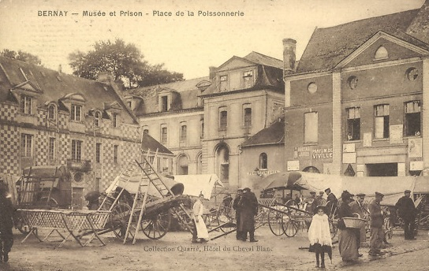
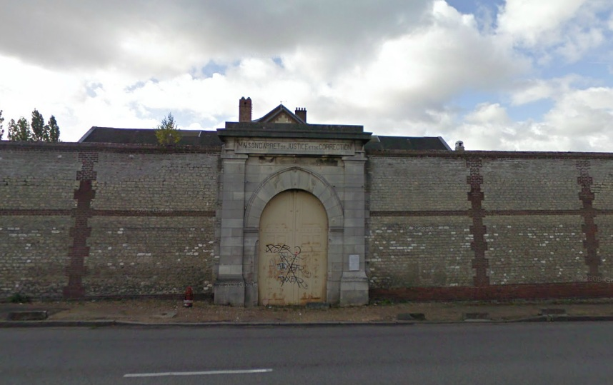
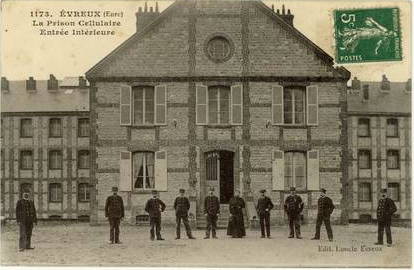
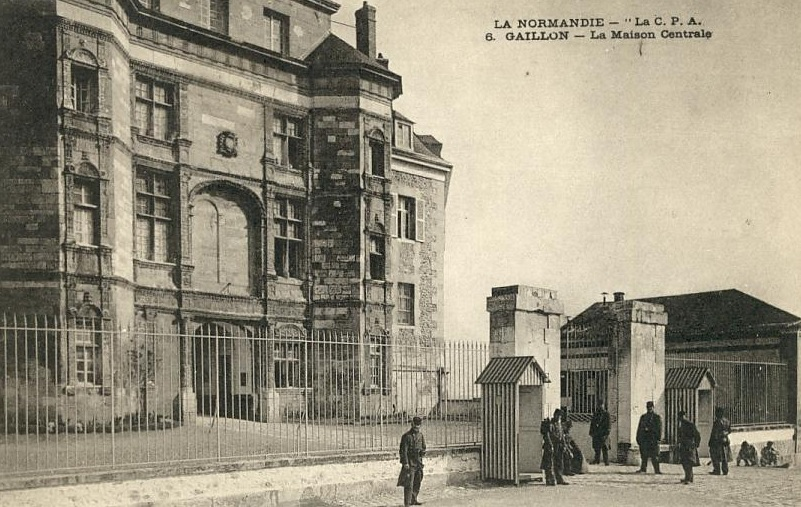
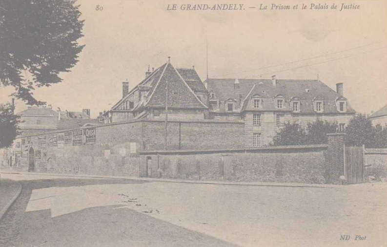
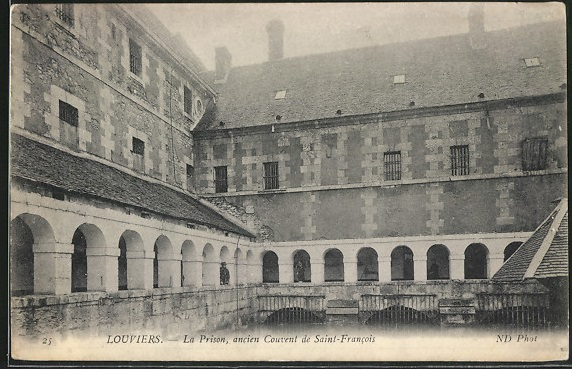

| Département | Images | Ville | Nom | Adresse | Période | Capacité | Histoire du lieu | Nombre d'exécutions |
| Eure (27) |  |
Bernay | Maison d'arrêt de l'Abbaye | Place de la Poissonnerie/Place Guillaume de Volpiano | 1792-1950 | Vendue à la Révolution, l'abbaye de Bernay, fondée vers l'an 1008, est rachetée par la municipalité pour accueillir l'hôtel de ville, mais également le tribunal et la prison. | Aucune exécution | |
| Eure (27) |   |
Evreux | Prison cellulaire | 92, rue Pierre Sémard (ex-rue de Paris) | En service depuis 1912 | 120 places (1962) | ||
| Eure (27) |  |
Gaillon | Maison centrale - Château | Allée de l'Ermitage | 1816-1901 | Suite au décret impérial du 16 juin 1808, l'Etat entame des démarches pour établir une centrale destinée aux détenus de 5 départements : Eure, Seine-Inférieure, Eure-et-Loir, Somme et Orne. Ouvrage de la Renaissance - bâti de 1500 à 1509, il est même le premier château construit en France à cette période -, pillé sous la Révolution, le château de Gaillon, pour raisons de commodités et de géographie, est sélectionné entre quatre édifices déjà existants le 03 décembre 1812. Acheté 90.000 francs, l'endroit est presque entièrement détruit pour rendre les lieux susceptible d'accueillir les détenus. "Ouverte" le 04 novembre 1816 - les travaux dureront jusqu'en 1824 - elle mêle au début de son existence détenus majeurs, mineurs, de sexe masculin ou féminin ! Le bâtiment est classé monument historique en 1862. Cas particulier : en 1876, on y crée un quartier spécial susceptible de recevoir 120 détenus reconnus déments. Le quartier survivra cinq ans à la fermeture de la centrale, lequel a lieu le 1er octobre 1901 : les prisonniers sont répartis vers d'autres maisons centrales, et l'armée prend possession de la majeure partie des bâtiments. En 1908, les lieux désaffectés servent de prison pour mineurs - ou plutôt de colonie correctionnelle -, jusqu'au 1er novembre 1921. Son rôle pénitentiaire n'est pourtant pas fini, puisque durant la Seconde Guerre Mondiale, on y enfermera successivement Résistants et collaborateurs. Après de multiples rénovations, le château est ouvert au public au cours de l'été 2011. | Aucune exécution | |
| Eure (27) |  |
Les Andelys | Maison d'arrêt | A proximité de la place Nicolas Poussin | -1926 | Voisine du palais de justice | Aucune exécution | |
| Eure (27) |  |
Louviers | Prison Saint-François | 1, rue des Pénitents | 1793-1934 | Ancien couvent des Pénitents de Saint-François, confisqué par l'Etat en 1790. Petite prison, entre 20 et 40 détenus. Restée inoccupée pendant près de 60 ans, l'école de musique y est installée depuis 1990. Bâtiment classé monument historique en 1994. | Aucune exécution | |
| Eure (27) | Pont-Audemer | Maison d'arrêt | Rue des Carmélites | 1807-1934 | Ancien couvent, transformé à la Révolution en tribunal - jusqu'en août 1896 -, gendarmerie et prison. | Aucune exécution | ||
| Eure (27) | Vernon | Maison d'arrêt | Rue de la Prison | 1864-1926 | Construit en lieu et place de l'ancienne prison, maison médiévale. Démolie après 1945 lors du percement du boulevard du Maréchal-Leclerc. | Aucune exécution |
{kind=link}
{kind=link}
{kind=link}
{kind=link}
{kind=link}
{kind=link}